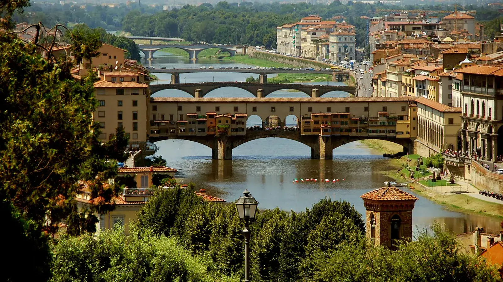

In breve
Prendi un treno ad alta velocità, Frecciarossa di Trenitalia oppure Italo: circa 1 ora e 30 minuti da Roma Termini a Firenze Santa Maria Novella, con partenze più o meno ogni 15–30 minuti dalla mattina presto alla sera. Prenotando qualche settimana prima le tariffe partono spesso da circa 15–20 €; comprando il giorno stesso di solito sono 45–60 € o più. Confronta orari e prezzi di Frecciarossa e Italo in una sola ricerca.
Confronto dei treni
| Treno | Tempo | Prezzo (solo andata) | Posto | Ideale per |
|---|---|---|---|---|
| Frecciarossa (Trenitalia) | ~1h30 | da ~15–20 € in anticipo, 45–60 €+ il giorno stesso | Assegnato, incluso | Quasi tutti |
| Italo | ~1h30 | simile, promozioni frequenti | Assegnato, incluso | Confrontare i prezzi |
| Intercity | ~2h45–3h | di solito meno dell'alta velocità | Assegnato, incluso | Raramente la scelta migliore |
| Regionale | ~3h40–4h+ | fisso, il treno più economico | Senza prenotazione | Budget minimo, senza fretta |
Prezzi indicativi (novembre 2026) che cambiano con la domanda: controlla sempre prima di partire.
Frecciarossa o Italo? Su questa tratta sono praticamente uguali per velocità e comfort. Leggi Trenitalia o Italo per le differenze su tariffe, cambi e salottini.
Stazioni: da dove parti e dove arrivi
- Roma Termini è la stazione principale, sulle metro A e B. Alcuni treni, soprattutto Italo, fermano anche a Roma Tiburtina: controlla quale c'è sul biglietto, sono a diversi chilometri di distanza.
- Firenze Santa Maria Novella (SMN) è in centro: il Duomo è a circa 10 minuti a piedi.
- Alcuni treni arrivano invece a Firenze Campo di Marte, sul lato est: poco comoda se l'hotel è vicino a SMN.
- Atterri a Fiumicino? Leggi Da Fiumicino a Roma: alcuni treni ad alta velocità per Firenze partono direttamente dall'aeroporto.
Biglietti e prezzi
- Compra sui siti e sulle app ufficiali di Trenitalia o Italo, oppure su un comparatore come Omio che li mostra entrambi. Evita siti sconosciuti che vendono "biglietti ufficiali" con un ricarico.
- Le tariffe più economiche (Economy e Super Economy di Trenitalia, Low Cost di Italo) hanno cambi e rimborsi limitati o assenti. Spendi qualcosa in più se i piani possono cambiare.
- I biglietti dell'alta velocità hanno il numero di posto e valgono solo su quel treno: non vanno convalidati. Va benissimo il biglietto digitale sul telefono.
- Venerdì, domenica e ponti si esauriscono per primi: prenota presto quei giorni.
Treni regionali: economici ma lenti
I regionali ci mettono circa 4 ore, spesso con un cambio, ma hanno una tariffa fissa bassa e non richiedono prenotazione. Il biglietto regionale cartaceo va convalidato prima di salire, altrimenti rischi la multa: leggi Come convalidare il biglietto del treno. I biglietti digitali comprati nell'app sono già legati a data e ora.
Errori da evitare
- Andare a Termini quando il treno parte da Tiburtina, o scendere a Campo di Marte invece che a SMN.
- Arrivare tardi: il binario dell'alta velocità compare circa 10–15 minuti prima della partenza e il treno non aspetta. Il tabellone indica il binario.
- Lasciare i bagagli incustoditi a Termini: tieni le borse vicine sul binario e a bordo. Le valigie grandi vanno negli scaffali in fondo alla carrozza.
- Andare in auto: a Firenze centro la macchina è inutile e le multe ZTL sono care. Noleggiala solo per il Chianti o le colline toscane.
Consigli
- Una gita in giornata da Roma a Firenze si può fare con un treno presto, ma due giorni sono meglio: leggi Firenze in 2 giorni.
- Prenota Uffizi e Accademia (il David) prima di partire: vedi i biglietti salta-coda.
- Prosegui per Venezia? Gli stessi treni continuano verso nord: leggi Roma, Firenze e Venezia in 7 giorni.
- Vuoi dormire vicino alla stazione? Confronta gli hotel vicino a Santa Maria Novella.
Organizza il viaggio a Firenze
Alcuni link sono affiliati: se prenoti tramite loro non paghi nulla in più e aiuti 687 a restare gratuito.
Da Roma a Firenze, senza sorprese.
In 687 Italy il trasferimento a Firenze è una tappa del viaggio: la stazione giusta, la prenotazione ufficiale dei treni e gli avvisi di sciopero. Se un ritardo cambia i piani, NOW ricostruisce il resto della giornata.
Fonti
Verificate su questi siti ufficiali a novembre 2026. Prezzi e regole possono cambiare: controlla sempre prima di partire.